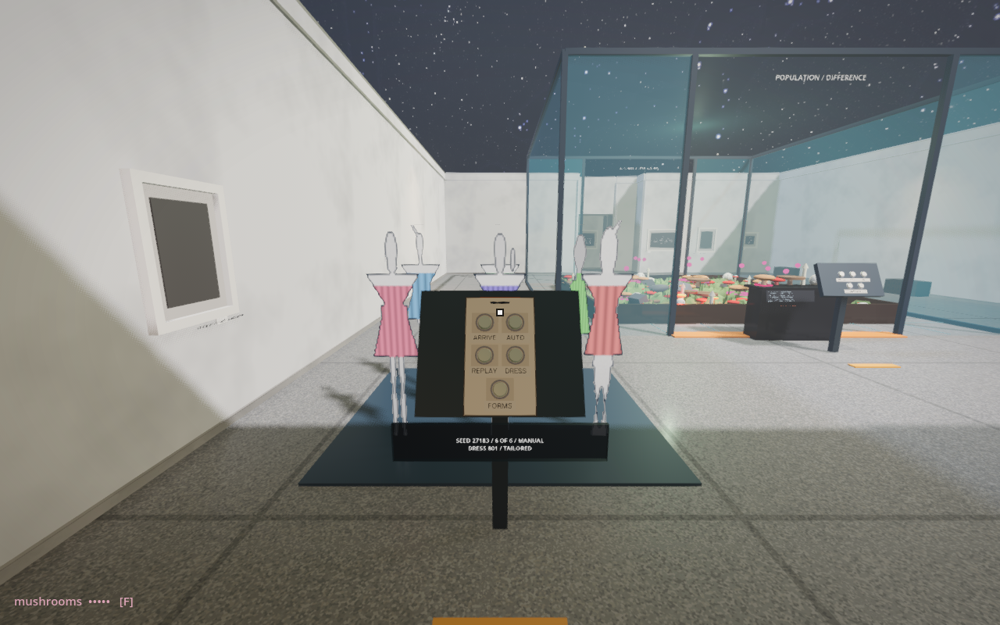
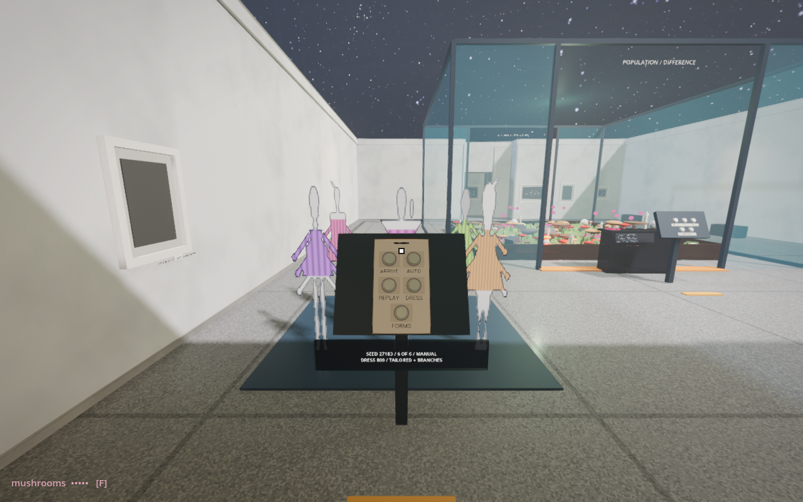
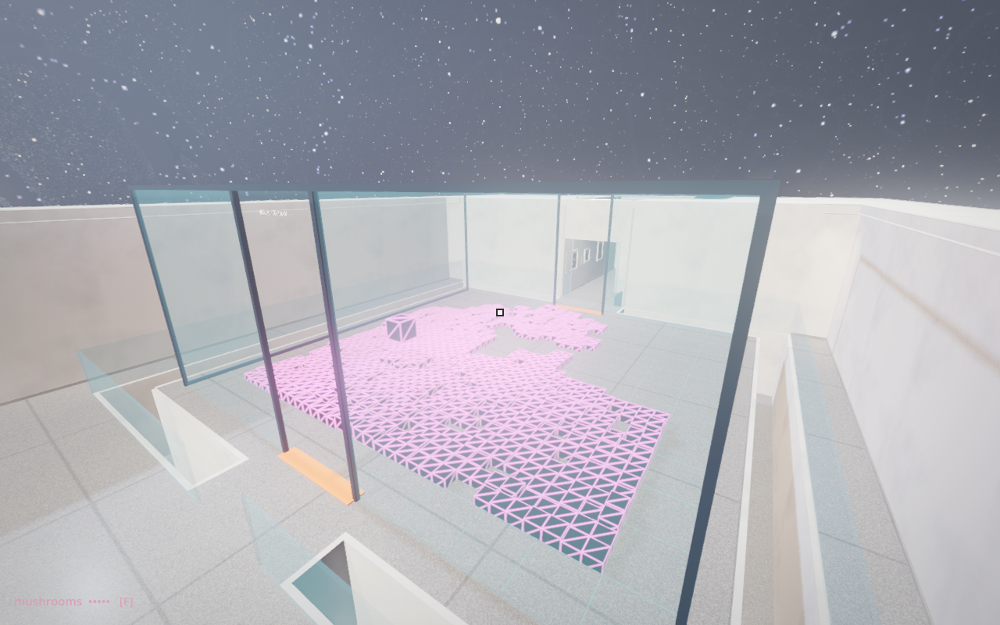

Randomness · Museum iteration
Who arrives?
What ground remains?
Randomness can choose a place, a delay, a body or a consequence. Keeping those choices separate lets us see what each rule changes.
Built: six arrivals, many possible appearances
In Random Mushrooms, a supporting exhibit samples six available places. Wait, or touch ARRIVE. REPLAY repeats the order; DRESS changes collars, hems, pleats and colour without moving anyone. FORMS changes the repertoire while keeping the dress seed: tailored garments, or the same garments with branching extensions. Switch back to recover the earlier appearance. AUTO can be switched off. The population stops at six.

These are flat, non-hostile figures made with the existing silhouette generator. They turn towards the viewer but do not walk, collide or pursue. A wardrobe is a small grammar: its ranges invite some differences and cannot produce every possible body.

Following the chance-operations discussion in 10 PRINT (pp. 125–127), this experiment distinguishes sampling an existing repertoire from changing its rules. New outlines do not grant these flat figures new bodily capabilities.
Built: walking randomness in a glass enclosure

The Transformation basins provide the spatial precedent: keep the experiment and gallery at the same level, distinguish their floors with a gap, and cross on a bridge. Random Walk now has this arrangement around its glass field. Raised cells retain visits; the surrounding floor remains a place from which to watch.
Next experiments — proposals, not installed
| Where randomness acts | Possible encounter | What to compare |
|---|
| Time | Light bays wake at irregular intervals; the visitor can replay the sequence. | Regular and random timing with equal total illumination. |
| Placement | Visitors arrive on marked safe floor cells throughout a hall. | Uniform choice versus clustered arrivals; preserve doorways and control space. |
| Relations | Nearby silhouettes admit or repel a new arrival. | Independent draws versus conditional placement; a bridge towards cellular automata. |
| Gameplay | Draw door outcomes from a finite bag, alongside the existing game with one guaranteed passage per round. | A guarantee within a set versus a probability on each attempt. |
| Memory | Random museum footprints fade or accumulate. | The same path under different rules for what the floor retains. |
Verification
63 desktop/runtime checks pass: population cap, replay, wardrobe independence, compact button reach, gallery support, open moat and supported bridges. Godot screenshots above show the actual halls. Headset comfort and touch remain to be checked. Existing project startup/cache warnings remain.
Read Random Mushrooms · Read Random Walk